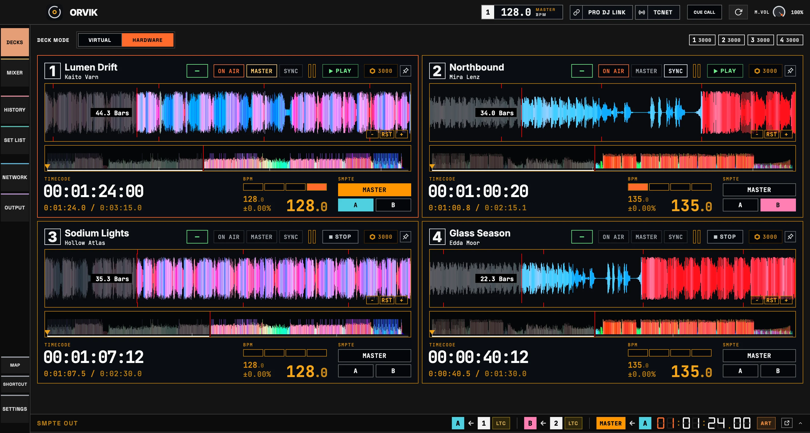
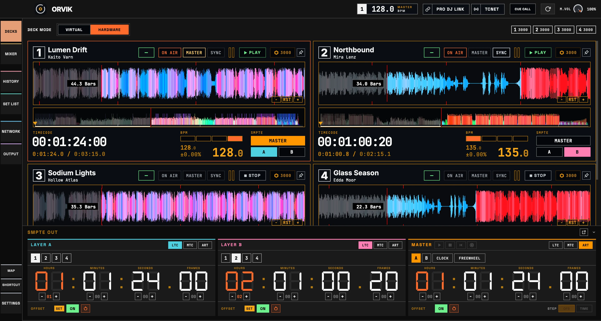
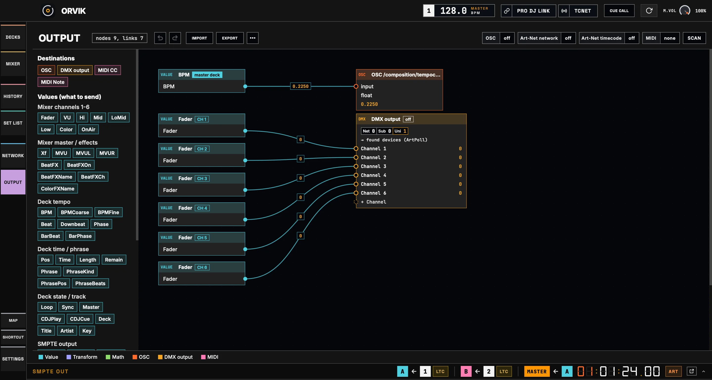
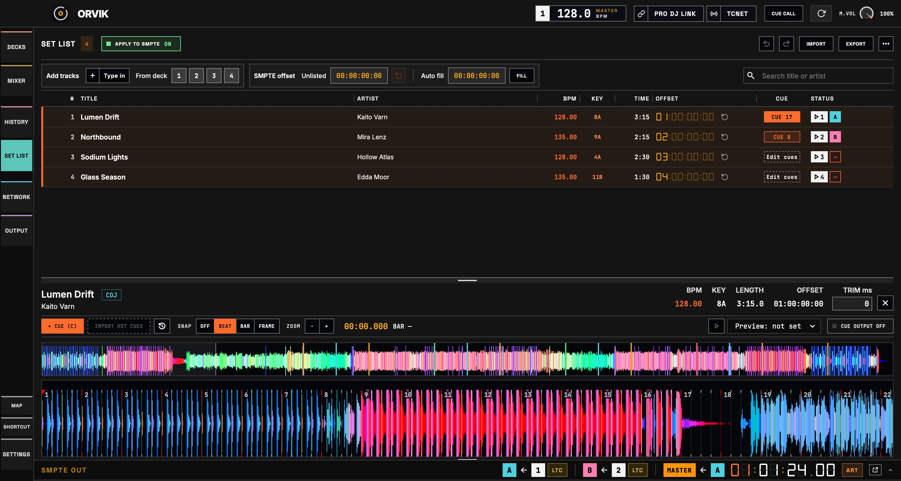
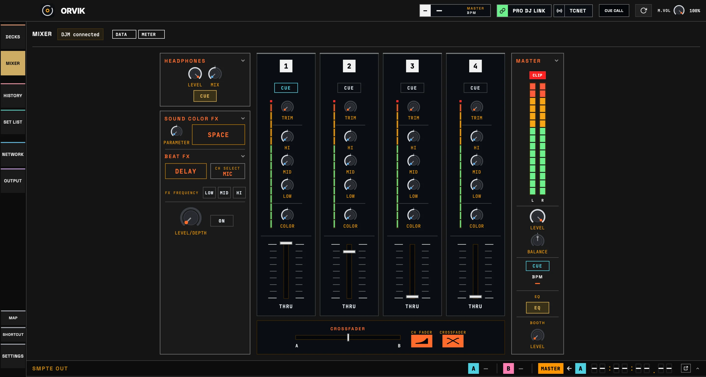
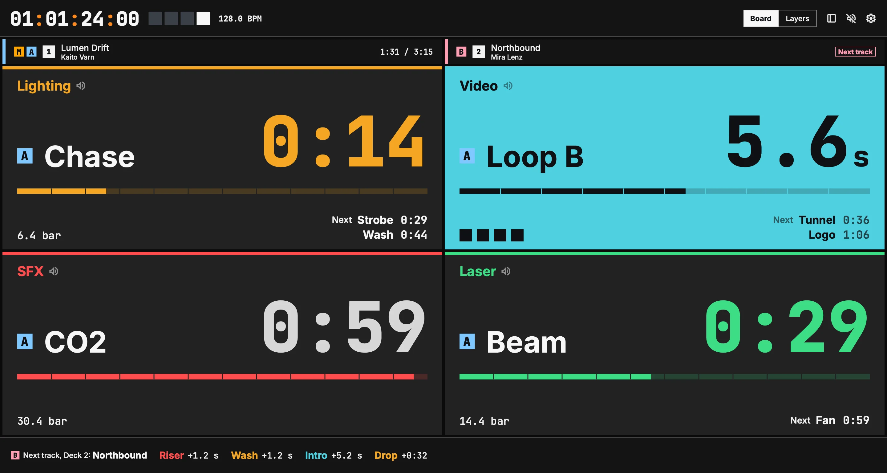
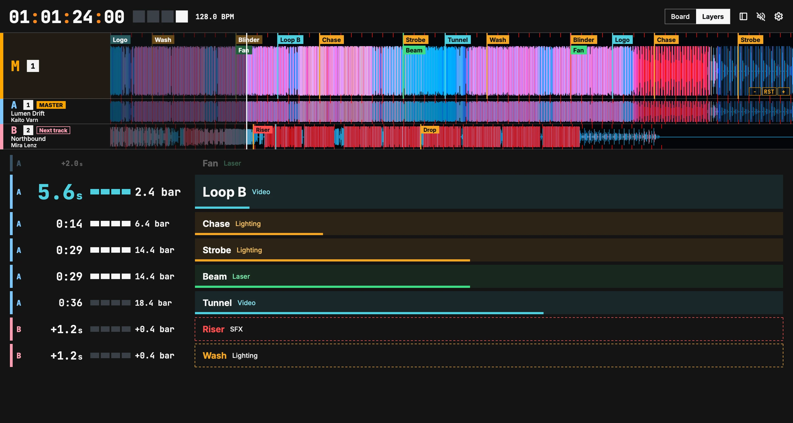

Tous les decks du réseau.
Position, BPM, formes d'onde et cues de chaque lecteur, tels que les lecteurs les envoient.

Position, BPM, formes d'onde et cues de chaque lecteur, tels que les lecteurs les envoient.

Timecode LTC, MTC et Art-Net pour les couches A, B et MASTER.

Un éditeur de nœuds qui convertit les valeurs des decks et du mixer en OSC, en DMX Art-Net ou sACN et en MIDI.

Un offset de timecode pour chaque morceau, et des cues qui envoient OSC, DMX et MIDI sur le temps.

Faders, EQ, FX et vumètres tels que le DJM les transmet, ici un DJM-900NXS2.

Prochain cue et temps restant par groupe, annonces vocales et le même compte à rebours sur un téléphone, à l'adresse /cuecall.

Le reste du matériel n'a pas encore été testé. Vos résultats sont les bienvenus dans les Issues.
Bêta gratuite sans limite de durée.
